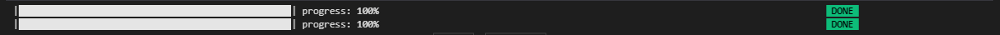

FenUtils module
FenUtils is a module that regroups all utilitary functions from loading bars to credential and io with the MySQL database.
Functions
Normalization
FenUtils.Normalizer
func FenUtils.Normalizer(To_normalize)
Function that takes a pandas.DataFrame and returns the same pandas.DataFrame but normalized.
Parameters :
To_normalize (pandas.dataframe) :
DataFrame to normalize.
Returns :
A normalized pandas.DataFrame
Duplicate smoother
FenUtils.uniqueVals
func FenUtils.uniqueVals(X,Y)
Function that takes two arrays and mean duplicate Y values in each X.
Parameters :
X (list) :
X axis array.
Y (list) :
Y axis array.
Returns :
X_unique (list) :
A list of unique values of X.
Y_unique (list) :
A list of unique values of Y for each X.
Sigma filter
FenUtils.dropOutSigma
func FenUtils.dropOutSigma(data,testTable,sigma,filter_id=False,return_index=True,columns=False)
Function that calculate the sigma of each column and filter rows of values that are outside the range for each FENICS board alone. returns at choise an index list of rows that are within the range, or a boolean mask.
Can be used for other than FENICS boards application as filter_id can be replace by labels and for each label a sigma filtering is done.
Parameters :
data (pandas.dataframe) :
FenDataFrame with Board infos and indexes.
testTable (pandas.dataframe) :
testTable with values to filter.
sigma (integer) :
The N values of sigma.
filter_id (list, optional) default=False :
List of ids for specific labels/FENICS boards filtering.
return_index (bool, optional) default=True :
True : return an index array.
False : return boolean mask of filtred rows of data.
columns (bool, optional) default=False :
List of specific columns to filter.
Returns :
if return_index is True, it returns a list of pandas DataFrame indexes. Else it returns a boolean mask.
Folder checker
FenUtils.checkFolderAt
Function that checks a folder location, if it exists it does nothing, if it do not exist it creates it.
Parameters :
path (string) :
Path to the directory to check.
Cumulative burn-time
FenUtils.burningTimeCumulativeCalc
func FenUtils.burningTimeCumulativeCalc(burnsTable,id,burnings)
Function that returns the cumulative time of burning given a burncycle and board id.
Parameters :
burnsTable (pandas.dataframe) :
DataFrame containing all the FENICS1 burning hours.
id (string) :
FENICS board id.
burnings (integer) :
The burning cycle of the FENICS board.
Returns :
CumulativeBurningTIme (integer) :
The cumulative burning time at the given burncycle for FENICS board id.
SSH io
FenUtils.FenSSHtunnel
func FenUtils.FenSSHtunnel()
Function that handles the SSH connection to the CERN.
Important Change inside the code the ssh_username field with yours.
Important The tunnel using paramiko does not seem to be working, we suggest to use an external terminal with an open tunnel.
Returns :
ssh_client (SSH client object) :
Paramiko ssh client object.
ssh_tunnel (ssh tunnel obbject) :
Paramiko SSH tunnel object
MySQL io
FenUtils.credentialsSetup
func FenUtils.credentialsSetup()
Function that handles MySQL database connection and io with python kermel using mysql.connector library. 5 attempts to connect before aborting to avoid abuse, each attempt a password is required if the password is not the right one.
Loading bar
FenUtils.loadingBar
func FenUtils.loadingBar()
A cosmetic terminal loading bar with custom succes message, and informations while loading.
Parameters
current_iter (interger) :
Current loop iteration.
num_iterations (integer) :
Expected maximum of iterations..
prefix (string, optional), default='' :
Prefix text before the loading bar, an fstring can be passed for interactive loading.
suffix (string, optional), default='' :
Suffix text before the loading bar, an fstring can be passed for interactive loading.
Example
for progress,columns in enumerate(Fast.columns):
FATL.FenBurnEvol(FENICS,Fast,columns,filter_id_slow,separate = False,LR=True,sigma=2 , unique=True, fileFormat='jpeg'
,path ='/users/divers/atlas/sisaid/home2/test01/burnTimeEvolution_nsep_nlr/fast')
FATL.loadingBar(progress,len(Fast.columns),suffix=str(columns))
for progress,columns in enumerate(Slow.columns):
FATL.FenBurnEvol(FENICS,Slow,columns,filter_id_slow,separate = False,LR=True,sigma=2 , unique=True, fileFormat='jpeg'
,path ='/users/divers/atlas/sisaid/home2/test01/burnTimeEvolution_nsep_nlr/slow')
FATL.loadingBar(progress,len(Slow.columns),suffix=str(columns))
